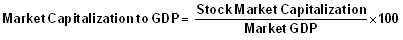

A ratio used to determine whether an overall market is undervalued or overvalued. The ratio can be used to focus on specific markets, such as the U.S. market, or it can be applied to the world market depending on what values are used in the calculation.
Calculated as:
The result of this calculation is the percentage of GDP that represents stock market value. Typically, a result of greater than 100% is said to show that the market is overvalued, while a value of around 50%, which is near the historical average for the U.S. market, is said to show undervaluation. In recent years, however, determining what percentage level is accurate in showing undervaluation and overvaluation has been hotly debated.
In 2000, according to statistics at the World Bank the market cap to GDP ratio for the U.S. was 153%, a sign of an overvalued market. With the U.S. market falling sharply after the dotcom bubble burst, this ratio may have some predictive value in signaling peaks in the market. However, in 2003, the ratio was around 130%, which was still overvalued but the market went on to produce all-time highs over the next few years.
{kind=link}